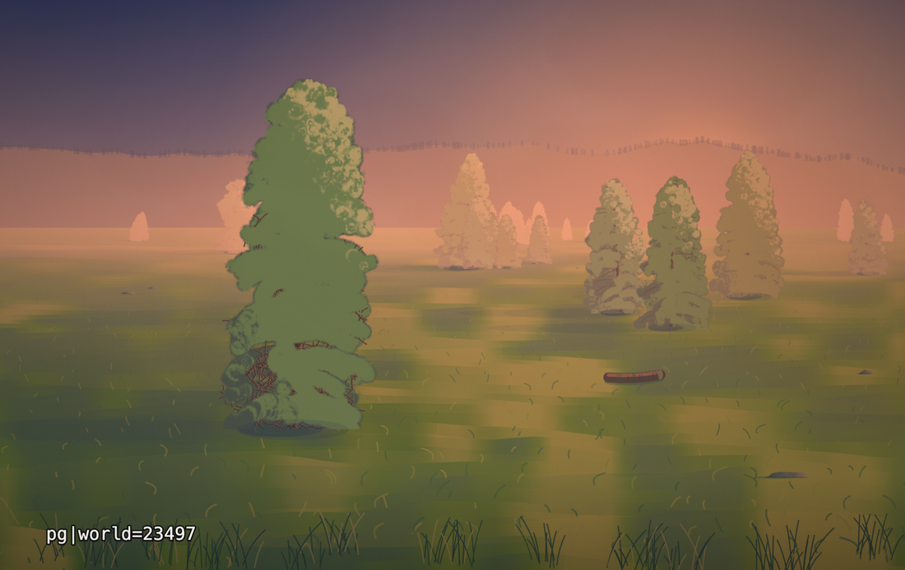
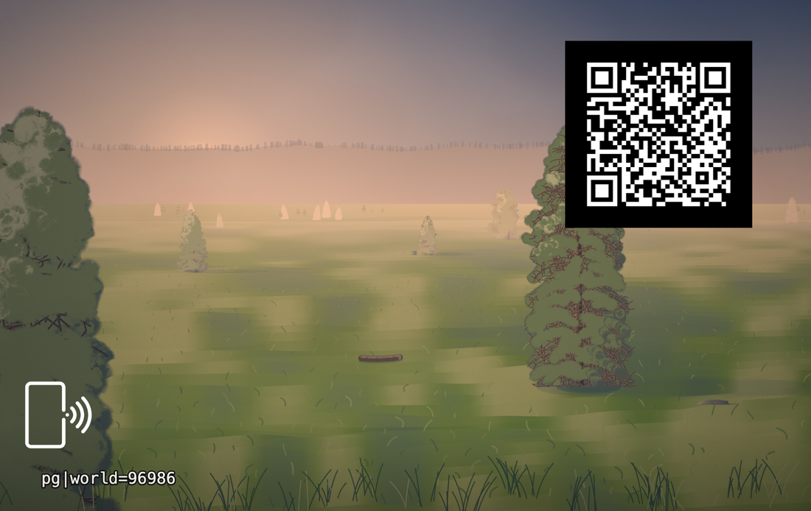

Vibe Cards · Card 012 · Parametric deck
A card that is a world number. Two engines meet here: one grows the trees, the other grinds the paint. Together they paint a finished landscape from one number.


That line is the whole card. One number names the world. Everything on the plate is worked out from it: the planet, its star, its weather, the trees and the paint.
pg|world=23497
Type this number at persona500.com/pangea and the same plate is painted again. Or open the link below. The address is already in it.
Regenerate it It is on the deck, and runs at home Print it yourself
world | The world number. The engine reads that world out of the digits of pi and paints it. Same number, same plate, every time. |
|---|
Everything arrives at once. Nothing is chosen by hand after the number is chosen.
Pangea has two parents. Bifurcata (card 011) grows the trees. Leviathan (card 010) grinds the pigment. Pangea is what the two make together: one world number, one finished plate.
It is the first child card in this deck. Crossing the methods of two parent cards to make a third is something the deck will keep exploring.
| Card size | 85.6 × 53.98 mm — a normal bank-card blank |
|---|---|
| Artwork | Exported at 2066 × 1319, the full bleed size |
| QR code | 20 mm on the back. It opens this page. |
| Tap mark | A small phone symbol on each face. Hold your phone there. |
| Licence | MIT |
What would you change about this card, or the engine behind it?
No account, no email, nothing to sign up for.